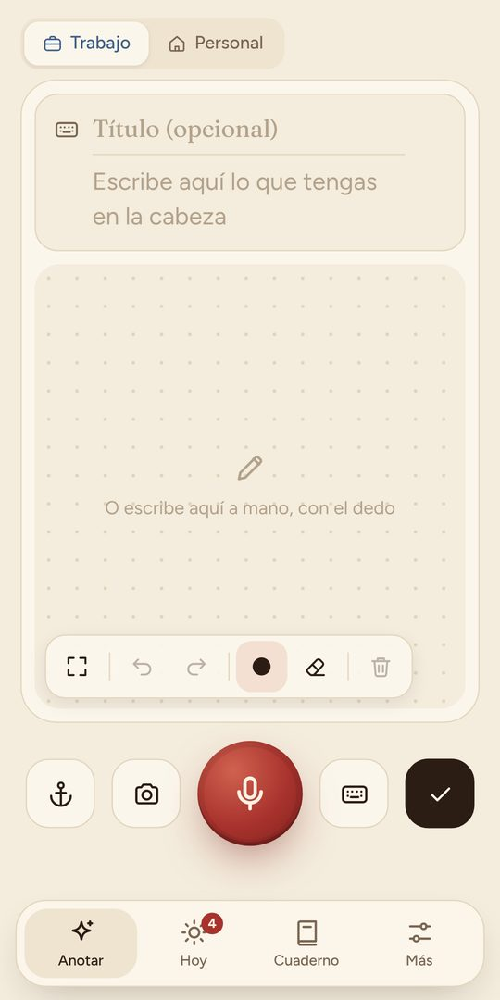
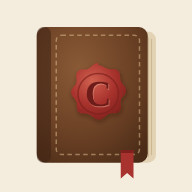
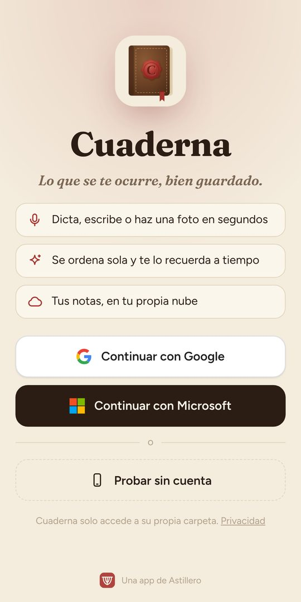
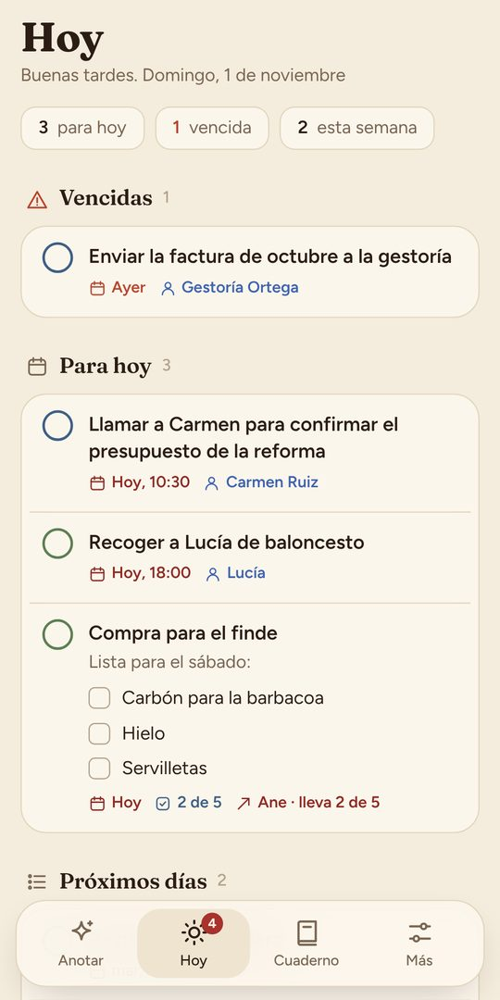
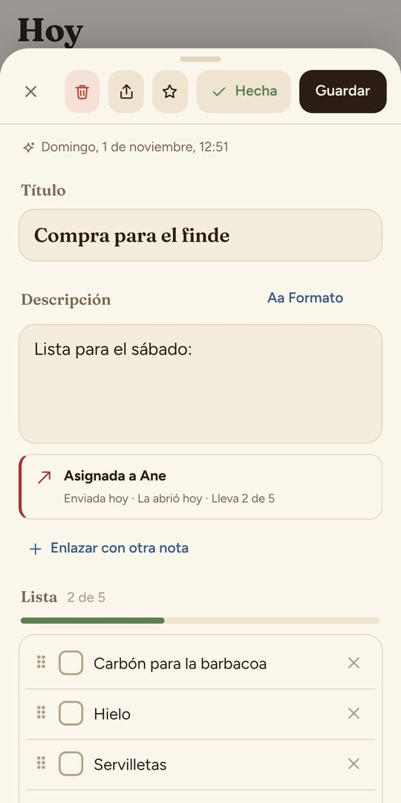
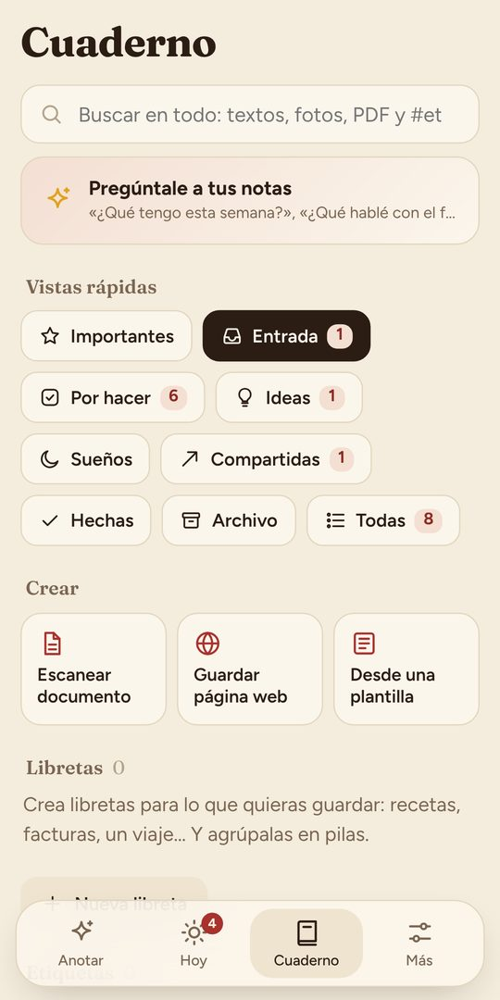

Anotar
Pulsa el micrófono rojo y dilo tal cual: «llamar a Carmen el jueves a las diez». Cuaderna entiende la fecha, la hora y la persona. También puedes escribir, hacer una foto o dibujar.

Instálala desde Safari y tendrás su icono en la pantalla de inicio, como cualquier otra app.
⏱ 1 minuto · sin App StoreAbre Safari (la brújula azul) y escribe:
cuaderna.astillerosoftware.es
Tiene que ser Safari: desde Chrome o desde el enlace de WhatsApp no aparece la opción de instalar. Si te llegó por WhatsApp, mantén pulsado el enlace y elige «Abrir en Safari».
Es el cuadrado con una flecha hacia arriba, en la barra de abajo (en algunos iPhone está arriba, junto a la dirección).
Desliza el menú hacia arriba hasta encontrar Añadir a pantalla de inicio y púlsalo.
Si no lo ves, baja del todo y pulsa «Editar acciones» para añadirlo.
Arriba a la derecha. Deja el nombre Cuaderna tal cual.
Ya tienes Cuaderna en la pantalla de inicio. Ábrela desde ahí, no desde Safari: así se ve a pantalla completa y recuerda tu sesión.
Pulsa Continuar con Google o Continuar con Microsoft. Tus notas se guardan en tu propio Google Drive u OneDrive, y las verás también en el ordenador.
Cuando te pregunte, permite el micrófono para poder dictar.
¿Solo quieres echar un vistazo? «Probar sin cuenta» funciona, pero las notas se quedan solo en ese iPhone. Luego puedes pasarte a una cuenta con «Conectar cuenta».


Pulsa el micrófono rojo y dilo tal cual: «llamar a Carmen el jueves a las diez». Cuaderna entiende la fecha, la hora y la persona. También puedes escribir, hacer una foto o dibujar.

Lo vencido, lo de hoy y lo de los próximos días. Toca el círculo de la izquierda para marcar algo como hecho.

Abre una nota, pulsa Compartir › Pasar a otra persona y envíala por WhatsApp. Verás cuándo la abre, cuántos puntos lleva y cuándo la termina.

Todas tus notas, con buscador. Pulsa Pregúntale a tus notas y escribe, por ejemplo, «¿qué tengo esta semana?».
¿Dudas o ideas? Escríbenos a hola@astillerosoftware.es o desde la app, en Ayuda › Sugerencias y mejoras.
Cuaderna, una app de Astillero Software